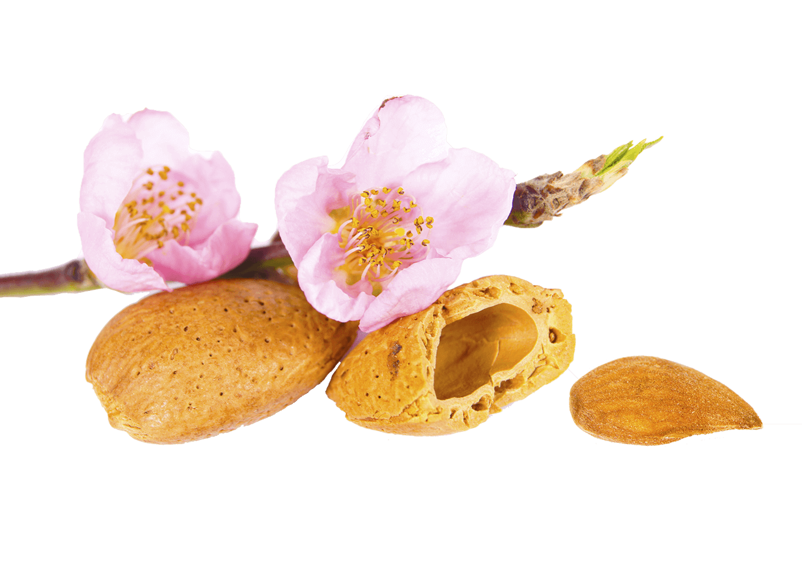

GARANTIZADO
NO MÁS PROBLEMAS DE AUDICIÓN
Cómo deshacerse del tinnitus y mejorar la audición en 4 semanas
RESULTADOS CONFIRMADOS POR INVESTIGACIONES
¡Por fin se acabó el ruido!
Que yo recuerde, para deshacerme de mis problemas de oído, ya utilicé dos tipos de pastillas y un audífono especial importado de Bélgica. Nada me ayudaba con el tinnitus: los ruidos y los sumbidos me acompañaban todo el tiempo, de día y de noche. Estaba nerviosa, pensaba que me estaba volviendo loca. Cuando empecé a utilizar Otorix noté rápidamente una mejora. Al cabo de unos días, los sonidos no deseados disminuyeron. Los ruidos empezaron a desaparecer gradualmente y al cabo de cuatro semanas, dejaron de producirse por completo. El médico dijo que mi audición había mejorado en un 50%. Empecé a vivir con normalidad
Mi nombre es Fernando Barrero y durante más de 10 años he estado creando soluciones para eliminar el tinnitus utilizando la medicina natural. Soy consciente del hecho de que esta enfermedad complica significativamente el funcionamiento diario. Enormes problemas de audición, disminución de la capacidad de concentración, dolores de cabeza, tensión e irritabilidad, e incluso neurosis y depresión: todos los días me encuentro con casos de este tipo en personas que lo padecen.
Muchas personas acuden a mí con información de otros especialistas con la que probablemente tendrán que vivir para siempre. Tengo muy buenas noticias para esas personas:
No es necesario acostumbrarse a estos molestos sonidos. Se ha desarrollado un método que elimina todos los ruidos, crujidos, pitidos, zumbidos y chirridos en los oídos incluso en 4 semanas. Y lo más importante, es un método natural que no requiere procedimientos complicados y dolorosos con el riesgo de complicaciones peligrosas.
Buena suerte.
Utilizando este método, incluso con ruidos fuertes y pérdidas auditivas severas, se puede:
- "Apagar los sonidos molestos" - progresos significativos ya en los primeros 6-7 días
- Oír claramente y sin molestias en 4 semanas
- Regenerar y fortalecer las células nerviosas auditivas hasta 3 veces más
- Proteger sus oídos del ruido excesivo y de otros factores externos que afectan negativamente al órgano auditivo
Esta fórmula es tan eficaz porque actúa en 3 niveles simultáneamente:
-
LA LUCHA CONTRA LA SENSIBILIDAD AUDITIVA
El innovador método se centra principalmente en separar los sonidos estándar, conscientemente audibles, de los que sólo oye la persona que lucha contra el tinnitus. El siguiente paso es neutralizar gradualmente el ruido que distrae hasta que desaparece por completo.
-
MEJORA LA CALIDAD DE LA AUDICIÓN
Los ingredientes activos contenidos en la fórmula reducen rápidamente las alteraciones del sistema auditivo y mejoran el flujo sanguíneo a través de los vasos sanguíneos del oído interno. Todo ello se traduce en una calidad auditiva 3 veces mejor
-
PROTEGER EL SISTEMA AUDITIVO
Esta fórmula refuerza intensamente el canal que transmite las ondas sonoras al tímpano, impidiendo que se dañen las células del oído interno bajo la influencia de factores externos (por ejemplo, el ruido), gracias a ello, el sistema auditivo está bajo protección constante y es resistente a las interferencias.
100% de cambio
Las noches eran lo peor de todo esto. El zumbido constante me mantenía despierto por la noche. Tenía momentos en los que me preguntaba si todo estaba bien conmigo. Las personas normales no escuchan ningún sonido extraño todo el tiempo ... Me ayudó mi nieta, que leyó en algún sitio sobre la eficaz acción de . Fue como un maná del cielo, después de 5 días el ruido se detuvo. Acaba de pasar un mes y los estudios han demostrado una mejora del 60% en la audición. Genial!
La alta eficacia de se debe a los extractos vegetales más concentrados, las vitaminas y los minerales más valiosos.
Estos son los ingredientes que se encuentran en cada comprimido:
-
Extracto del fruto de Olea Europaea
Estimula las fibras nerviosas y aumenta el óxido nítrico en los vasos sanguíneos, lo que les permite expandirse gradualmente y al mismo tiempo "apagar" los sonidos no naturales que molestan al oído.
-
Extracto de menta piperita
Tiene un efecto analgésico y antiinflamatorio. Un amplio espectro de actividad farmacológica hace de esta planta una de las más populares e importantes plantas medicinales.
-
Extractode almendras dulces
Debido a su alto contenido en ácidos insaturados, tiene una gran capacidad para suavizar la epidermis y reforzar la barrera lipídica protectora de la piel.
Gracias a la fórmula de Otorix, la eliminación del tinnitus es finalmente:
-
Efectiva
Gracias a los ingredientes cuidadosamente seleccionados con una concentración extremadamente alta, los sonidos que interfieren con la audición se reducen en 5-7 días. Oiga 3 veces mejor en 28 días.
-
SALUDABLE Y SEGURO
Otorix se compone únicamente de ingredientes naturales, incluida la más alta concentración de extractos de ginkgo biloba beneficiosos. También se trata de mejorar la audición sin necesidad de realizar pruebas audiológicas prolongadas ni tratamientos complicados. ¡Con 2 comprimidos al dia es suficiente!
Recuerde que este método, al igual que otros, no funcionará para todo el mundo. A pesar de ello, el fabricante está tan satisfecho con el trabajo de Otorix que da la siguiente garantía:
¡La única garantía de este tipo!
Si, por cualquier motivo, el uso de Otorix no le resulta satisfactorio, comuniquese nuevamente con nosotros y le haremos una asesoria.
¿Cómo pedir Otorix de forma segura?
Los ingredientes de mayor calidad, no son fáciles de obtener, especialmente el extracto puro y altamente concentrado de ginkgo biloba, que se ha utilizado en la medicina auditiva tradicional durante siglos. Por lo tanto, este producto no puede ser economico
Solicítelo con 50% de descuento: precio normal - precio con descuento
El precio aumentará en las proximas horas
NOTA NECESARIA
Para pedir , siga las siguientes instrucciones. Recuerde que el número de paquetes es limitado, por lo que el pago es contra entrega y en efectivo.
Rellene el formulario de pedido debajo del botón en la parte inferior de la página.
llegará a sus manos después de 2-3 días. Si el producto no le satisface, comuniquese con nosotros y le daremos una nueva asesoria.
Aunque personalmente estoy convencido de que habrá satisfacción. A decir verdad, espero entusiasmo por su parte. Creo que puede deshacerse del tinnitus en pocos días, y mes y medio es suficiente para mejorar su audición de forma significativa.
"Tenía miedo de lo que oía"
Me resultaba difícil creer que alguna vez me enfrentaría a esos terribles sonidos que mis oídos experimentaban cada día. Una especie de estruendo, crujido... el mismísimo diablo se asustaría... Mientras tanto, Otorix funcionó inmediatamente. No sólo me libré de esos sonidos molestos en pocos días, ¡sino que pude oír mucho mejor que antes! Gracias por Otorix!
Gloria Martinez, 59 años, Neiva Huila

"El silencio es riqueza"
Desde que tengo Otorix, me encanta este momento silencio. Por fin puedo disfrutar plenamente, relajarme y nada me molesta: no hay zumbidos ni murmullos. Es una sensación realmente fantástica!
Flor Velazquez, 45 años
Por fin puedo trabajar con normalidad
Reconozco que no existe una vida normal con el tinnitus. Especialmente en el trabajo, cuando tienes que centrarte y concentrarte. ¿Cómo, si no paras de tararear algo? En lugar de pensar en el trabajo, te preocupas por tu salud. Y así todos los días. Afortunadamente, descubrí . Sin eso, no tiene sentido volver a la vida normal.
Andres Cespedes, 34 años
Una buena audición es esencial
Llevo usando unas 3 semanas. La diferencia entre lo que había antes y lo que hay ahora me parece increíble. Los ruidos han desaparecido por completo, puedo oír claramente y bien, ¡incluso a distancia! Puedo oír mejor que nunca!
Yolanda Perez 50 años
Si no fuera por Otorix, sería terriblemente malo
Con el paso de los años mi audición se ha deteriorado, seguramente por andar con auriculares. No paraban de decirme: "¿Escuchas? "Esto llevó a mis amigos a los extremos. Llegó a un punto en el que me limité a salir a la ciudad, a ir a fiestas. No quería que se rieran de mí por ser sorda. Gracias a , en menos de 4 semanas mejore la audición completa en ambos oídos. Impactante.
Sandra Muñoz, 28 años